2 light-years
Earth Twin
Rocket Twin
Earth Frame (S)
Rocket Frame (S′)
Acceleration:
Path:
2 light-years
Earth Twin
Rocket Twin
Earth Frame (S)
Rocket Frame (S′)
This is a simulation of time dilation. Use the control panel to start and stop the animation.
☕ Buy me a coffeeTwo pictures, one trip. The left graph is from Earth's frame of reference: where things are and when they happen, as if you stayed home. The right graph is the same journey described in the rocket's frame of reference, updated little by little as the ship moves. Same story and same events; only the labels on the axes change.
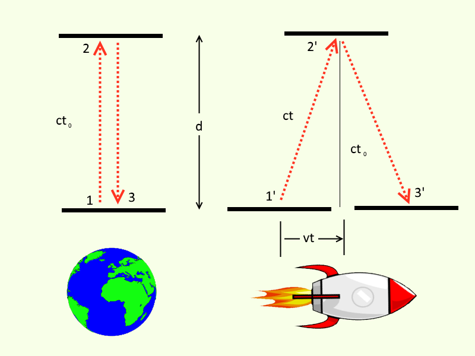
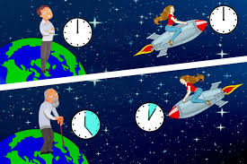
Clocks and speed. Special relativity says a clock that moves in a straight line at high speed ticks slower as judged by someone who stays at rest, if you compare how much time passes on each clock between the same start and end events. The graphs plot time (horizontal) against position (vertical): a steeper line means the rocket is covering more distance in the same Earth time, so it is moving faster. The next comfort level names the usual factor γ (gamma) that quantifies that slowdown between agreed events.
What ‖s‖ is (informally). The number ‖s‖ beside each graph is computed from the rocket’s current event as √((ct)² − x²) in that diagram’s coordinates. That is the invariant interval from the start of the trip to that event — the same value every inertial observer would assign to that pair of events. For a steady one-way cruise from rest at the origin, that number matches the time on the rocket’s wristwatch. After turns or acceleration, the wristwatch can read less than ‖s‖ at reunion (twin effect), while ‖s‖ still measures the straight, inertial “shortcut” proper time between the same two events. When speed approaches c, ‖s‖ along the rocket path grows more slowly than Earth-frame time ct on the left graph (clocks at rest in S) between the same events. Textbooks package that comparison in a factor γ (gamma), used explicitly one comfort level up.
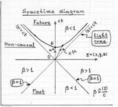
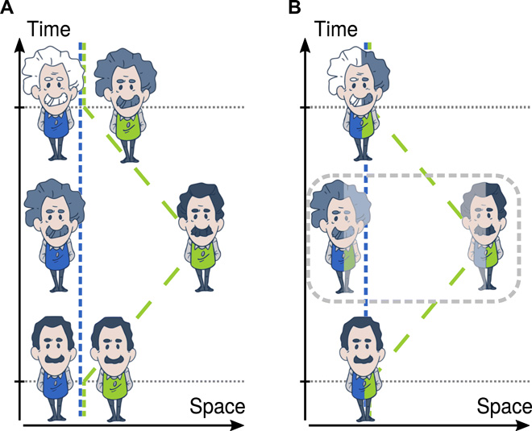
The twin idea. If one twin stays home and the other flies away and comes back, the traveler usually ends up younger at the reunion. Roughly: the traveler spends part of the trip at high speed, where each second of their life corresponds to more than a second on Earth. Who accelerates (changes velocity) matters for telling the two stories apart; the animation lets you try one-way and round-trip paths.
About the second graph (S′). The rocket-frame diagram is built by updating a Lorentz transformation at every small step along the trip — still the same events as on the left, just converted into the rocket’s frame at each moment. For a steady one-way cruise that matches what textbooks do in one go.
Flat screen, not “flat spacetime drawn wrong.” The graphs are flat pictures: a grid and straight traces only plot numbers as (x, ct) (or primed) from the simulation — ordinary Euclidean pixel layout. Physical intervals use a minus sign, as in ‖s‖ = √((ct)² − x²); a longer line on the monitor is not automatically “more invariant time.” Flat Minkowski spacetime (no gravity in this special-relativity demo) is a different idea from mistaking the chart for school-compass geometry on paper.
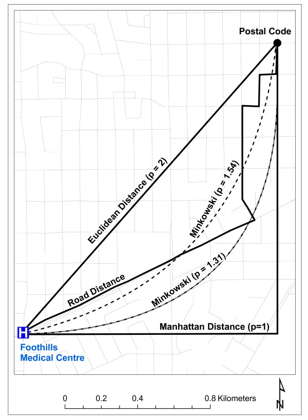
For turnarounds and asymmetric speed profiles the picture is still instructive, but some details (for example Earth appearing to end slightly away from the origin in S′) are limitations of that step-by-step construction, not something you would see in a perfect accelerating-frame description.
Same events, two coordinate charts. Graph 1 plots each event in Earth-frame coordinates (x, ct). Graph 2 plots the same stored events after a Lorentz boost into the rocket’s comoving frame (x′, ct′), step by step when speed changes. Think of it as two languages for one worldline history, not two different trips.
Hyperbolic geometry of spacetime. In everyday geometry, the distance between two points is d = √(x² + y²). In special relativity the "distance" between two events is the spacetime interval: ‖s‖ = √(ct² − x²). Notice the minus sign — that is what makes spacetime hyperbolic (Lorentzian) rather than the usual positive-definite (Euclidean) notion of length. This interval is invariant: every observer, no matter their velocity, computes the same ‖s‖ for the same pair of events.
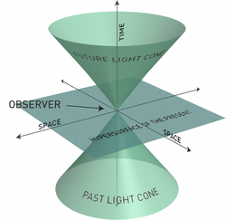
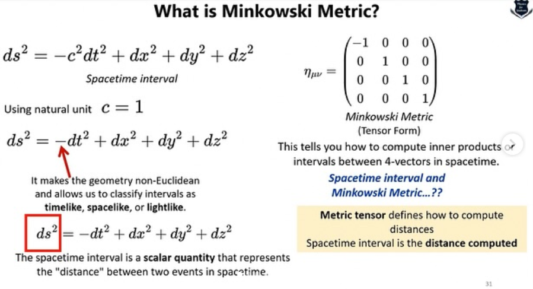
What ‖s‖ tells you. With β for v/c and γ = 1/√(1 − β²) (the Lorentz factor behind the beginner slow-clock paragraph), a rocket moving at constant β from the origin has position x = β·ct, so ‖s‖ = ct·√(1 − β²) = ct/γ. That equals the rocket’s elapsed proper time on that leg, and also equals the proper time of the unique inertial geodesic connecting the origin to that event. The faster it moves, the smaller ‖s‖ becomes relative to ct. At the speed of light (β = 1), the interval drops to zero: a photon experiences no proper time at all.
The twin paradox. This is the geometric core of the twin paradox. After a round trip both twins meet at one spacetime event, so the invariant interval ‖s‖ from trip start to that reunion (computed from Earth coordinates, where x ≈ 0) is a single number for everyone. The traveler’s wristwatch (tShip in the legend, accumulated as ∫dt/γ along the actual path) reads less than that, because proper time adds up along the worldline you took. A curved or kinked timelike path accumulates less proper time than the straight inertial geodesic between the same two events. In Minkowski geometry that geodesic maximizes proper time — the opposite of Euclidean distance, where a straight segment is the shortest path.
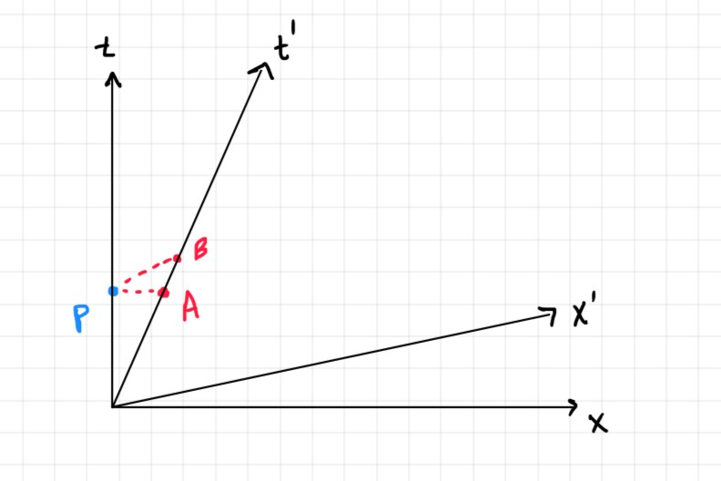
Lorentz coordinates on a Euclidean canvas. Same caveat as the beginner “flat screen” paragraph, in compact form: pixel positions use ordinary flat (Euclidean) distances, while axis labels are Lorentz coordinates. A ruler on the monitor measures screen length, not the invariant interval — ‖s‖ always comes from the Minkowski combination (ct)² − x² (or the primed version in one global frame), not from how long a line looks in pixels.
Why the rocket worldline can look shorter along ct′. Along the rocket in S′, each Earth-frame step satisfies Δx = βΔct, so Δct′ = Δct/γ: coordinate time in S′ advances like proper time for the ship. For Earth at rest in S each step has Δx = 0, so under the same boost Δct′ = γΔct. The red trace need not span the same horizontal extent as the blue one; that is boost mixing and time dilation, not a mistake in the plot.
Note on the Rocket Frame (S′) graph. The S′ worldlines are built with an incremental piecewise Lorentz boost: each small time-step Δct is transformed using the rocket's instantaneous velocity β and the results are accumulated. For constant-speed unidirectional trips every step uses the same β, so this is equivalent to a single exact Lorentz transform and ‖s′‖ = ‖s‖. Hence, trust Graph 1 (S) and ‖s‖ between events for invariants; use S′ as the rocket’s Lorentz view when β is steady, and treat S′ after turns as qualitative unless you dig into the caveat below.
How to read the sim after a turnaround. Default to Earth frame (left), ‖s‖ between events, and tShip along the path for elapsed proper time on the rocket; expect coordinate quirks in S′ when β changes step to step. For bidirectional trips with asymmetric acceleration (e.g. linear ramp-up outbound, instant reversal inbound), the outbound and return legs apply different γβ profiles. As a result Earth's worldline in S′ may not return to x′ = 0 at the reunion, even though physically the rocket and Earth are co-located again. This is a known artifact of the piecewise method: the transform is path-dependent, so the same reunion event, reached via different worldline histories, maps to different S′ coordinates. The displayed ‖s′‖ may also diverge from ‖s‖ for the same reason. A fully correct non-inertial coordinate system (Fermi–Walker or radar coordinates) would preserve co-location but is substantially more complex to implement.
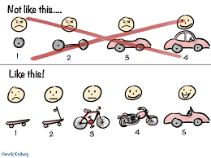
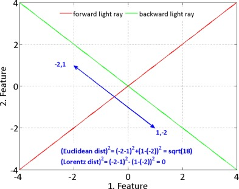
Coordinate charts vs. Euclidean display. Each diagram sends an open set of Lorentz coordinates (global S, or piecewise-composed S′) into ℝ² for rendering. That map is smooth for visualization but is not an isometry: the viewer’s Euclidean arc length in pixel space does not reproduce proper time or invariant interval. Physical lengths come from the Lorentzian metric on Minkowski space, not from a ruler on the PNG. Graph 1 and graph 2 are different charts of the same underlying events when the piecewise boost is consistent (e.g. one constant β). Operationally: for elapsed times and invariants between events, read Graph 1 and ‖s‖; use S′ as a Lorentz view that agrees with S when β is constant, and lean on the intermediate caveat when β varies along the path.
Metric and invariant interval. Minkowski spacetime carries the flat Lorentzian metric with signature choice (+,−) here: the invariant interval between events separated by (Δct, Δx) is Δs² = (Δct)² − (Δx)² (timelike if positive). Lorentz transformations are isometries of this metric, so a single global inertial frame change leaves ‖s‖ fixed for any pair of events. Proper time along a timelike curve is τ = ∫√((Δct)² − (Δx)²) along the curve; for inertial motion this collapses to Δτ = Δct/γ.
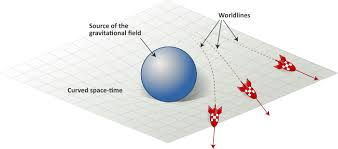
Geodesics vs. general worldlines. Between two timelike-related events, the unique inertial (unaccelerated) segment maximizes proper time (twin “paradox”). A piecewise-inertial path with the same endpoints has strictly smaller integrated proper time. Contrast Euclidean distance in the plane: a broken path between two points is usually longer than the straight chord (triangle inequality). For timelike proper time in Minkowski space the inequality flips: the chord (geodesic) is the longest time, not the shortest distance.
Rapidity and boosts. Writing β = tanh ψ, colinear boosts compose by adding rapidity ψ, whereas spatial rotations compose by adding angle. Non-colinear boosts do not commute; successive boosts can generate a rotation (Thomas precession), which foreshadows why gluing many small boosts along a curved worldline is subtle. This demo still advances each step with instantaneous β, not ψ; rapidity is the language that explains why those small boosts need not piece together into one innocent global S′.
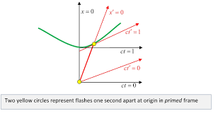
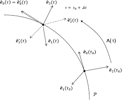
Piecewise boosts and S′ in this demo. The S′ graph integrates incremental boosts on each Δct using the instantaneous β(t). For one constant β this reproduces one global Lorentz map, so ‖s′‖ = ‖s‖ for the endpoint event vector. For varying β, the construction is a sequence of different inertial charts; composing boosts along a non-inertial trajectory is path-dependent and does not generally yield a global inertial frame. Hence reunion need not appear at x′ = 0 and the displayed ‖s′‖ can differ from ‖s‖: cross terms from changing boost from step to step spoil naive interval invariance of the accumulated coordinates.
A Fermi–Walker transported tetrad (or radar/Rindler-type coordinates matched to the actual 4-acceleration) is the sort of upgrade that would remove artifacts such as reunion at x′ ≠ 0 in the piecewise S′ picture described in the intermediate caveat — at the cost of a substantially heavier implementation than this visualization.